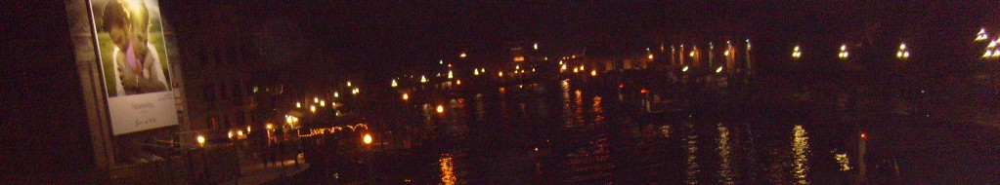

Visiting Venice (Part 3)RIALTO BRIDGE AND MARKETThe Rialto Bridge and its fish and fruit markets are yet another of the must-see places on the tourists' itinerary in Venice. The bridge, which was the first to be built across the Grand Canal, is unusual in that there are souvenir and other stalls on both sides of it. As for its world-famous erberia (fruit and vegetable market) and pescaria (fish market) it is said that the biggest restaurant owners and chefs come here very early in the morning to personally select the fish for the table later in the day. The pescaria has been here for a thousand years so you will be as close as you can be to typical Venetian lifestyle here. But make sure you do not come here on a Sunday or Monday as it is closed on both days (the erberia is only partially open on Monday mornings). You can easily find the markets once you are at the Rialto Bridge but if you should come by vaporetto the nearest stop for the market is called Rialto Mercato. After your visit to the Rialto market you might want to cross over to the Ca' d'Oro on the opposite side of the Grand Canal on a traghetto which stops just outside the market and is the shortest, fastest and cheapest (!) way to get there but are you up to it, I mean will you be able to maintain your balance on the rocking boat without falling over? Be warned that the boat is quite narrow and there is more often than not just standing space as the locals do make frequent use of it. The upside of course is that you will be able to have a gondola experience for just 50 euro cents!
THE WORLD'S FIRST GHETTOMost tourists to Venice also make a point of visiting the Ghetto, which was the first in the world. In fact for three centuries this Jewish ghetto was isolated from the rest of Venice as the whole area had walls around it and the entrance was controlled to prevent the Jews from mixing with the local population. It was only in 1797 that Napoleon put an end to this segregation and today the area is inhabited not only by Jews but also by the local population. If you want to make sure you'll not miss it among the maze of canals and alleys in the Cannaregio area take a vaporetto boat and get off at the Guglie stop. If you see a long narrow lane nearby at the quay don't be afraid to enter it as it will lead you to the Ghetto (I don't know if they are there all the time but there were 3 guards in uniform chatting at the alley when I passed by). Once you get to a square you will see the Info Point where a friendly woman will be only too happy to give you a briefing of the whole Ghetto area and how the camp originated.
SOME FAMOUS BUILDINGSThree of the most impressive buildings in Venice most visited by tourists also have the most impressive façade. These are the Basilica di San Marco (St. Mark's Basilica) and the Palazzo Ducale (Doge's Palace), both of which are in St. Mark's Square and the Ca' d'Oro (meaning House of Gold), the fabulous Gothic palace along the Grand Canal in Cannaregio which has now been turned into a small art museum. In fact its official name is the Palazzo Santa Sofia.
LIDO AND THE VENICE FILM FESTIVALLido, home to the Venice Film Festival, is the terminus of the vaporetto Line 1 and boasts of a sandy beach which is very popular in summer. Much of the 12km beach though has been privatized and lined with hundreds of private cabins for changing facilities. The beach was the setting for Thomas Mann's "Death in Venice" though the famous Hotel des Bains has been closed recently for repair. Hotel Excelsior is where all the cinema people stay nowadays during the Venice Film Festival, the next event being scheduled from 27 August to 06 September, 2014. It takes hardly 15 minutes by the vaporetto boat from San Marco and another 10 minutes leisurely walk from the boat stop to the public section of the beach (as you alight from the boat cross the street ahead and just walk along the Gran Viale S.M. Elisabetta right to the end). If you want a taste of Italian ice-cream look out for a highly recommendable ice-cream shop along the Gran Viale hardly 50m down from the vaporetto terminus (it's to your left). I was happily surprised that the famous Italian ice-cream was still available in winter. There were many different varieties to choose from there and at 2 euros for two big scoops, it was well worth it.
GIUDECCA - THE OTHER FACE OF VENICEA very important festival, the Festa della Redentore is held at the Redentore Church on Giudecca island on the third Sunday of July every year to commemorate the end of the plague of 1577. The night before that there is a huge fireworks display on the Giudecca Canal. Though it's essentially a residential area today there is still a long-established shipyard there, a vestige of its industrial past. Although Giudecca is not on the popular tourists' circuit yet the Redentore or Palanca boat stops there will take you to St. Mark's Square in hardly 10 minutes. It is also in Giudecca that the only youth hostel in Venice (Ostello Venezia) is situated, just a stone's throw from the Vitelle vaporetto stop. Next to it is a really good pizza shop. For 3 euros you can have a big piece of pizza margherita that is enough to take care of your lunch. Not only cheap but also yummy. And if you should walk further down towards the Redentore boat stop and then on to the Palanca boat stop (and exploring the quiet streets behind them) you will never miss a small bar/café filled with locals only (remember this is not a touristy area). And no wonder, because it sells one of the best sandwiches I have ever tasted and at only 1.40 euro each. The bread is really out of this world. There are different types of fillings and I tried one with thon and another with spinach. They were more than just titbits and I didn't need to have lunch after that. Who says Venice is only for the rich?
 There is something magical about Venice at night. |